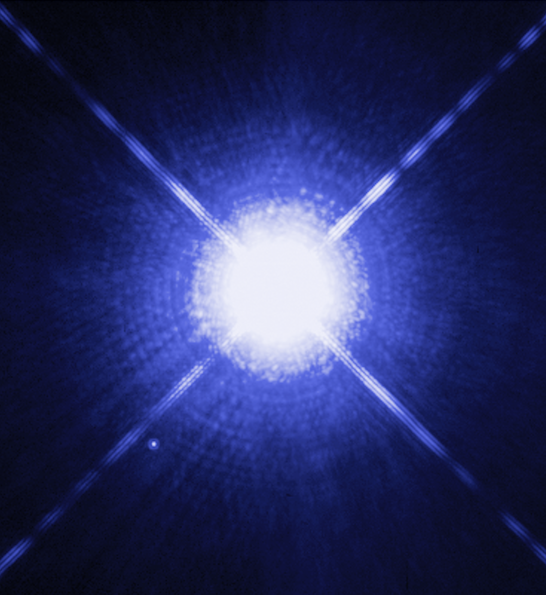
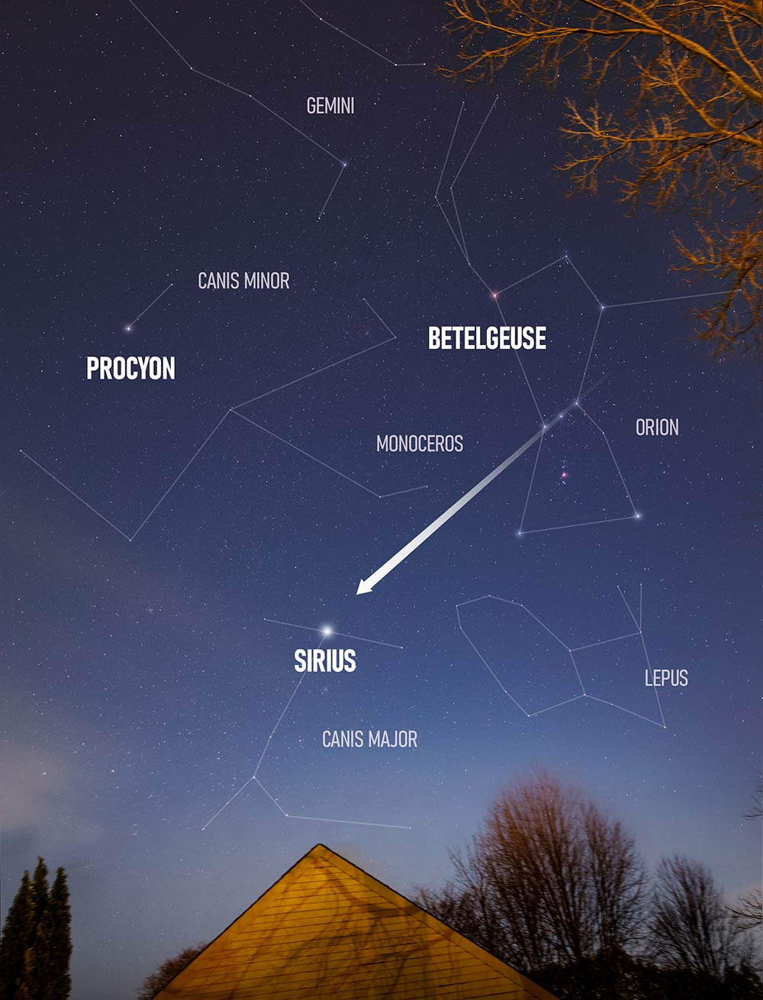

Sirius: the Brightest Star in the Night Sky
Sirius is known for being the brightest star in the night sky and is nearly twice as bright as the next brightest star, Canopus with a magnitude of -1.46. Sirius is also known as the ‘Dog star’ because it is part of the constellation Canis Major, which is Latin for “the greater dog.”
The name Sirius stems from the Greek word Seirios, meaning ‘scorching’ or ‘glowing’. Typically, the only objects that outshine Sirius in our night sky are the sun, moon, Venus, Jupiter, Mars, and sometimes Mercury. Sirius’ brightness can be attributed to its luminosity and proximity at a distance of 8.6 light-years. There are few stars that are closer to Earth, but none of them can match Sirius’ magnitude.
Hubble image of Sirius A, the brightest star in our nighttime sky
This Hubble Space Telescope image shows Sirius A, the brightest star in our nighttime sky, along with its faint, tiny stellar companion, Sirius B. Astronomers overexposed the image of Sirius A (centre) so that the dim Sirius B (tiny dot at lower left) could be seen. The cross-shaped diffraction spikes and concentric rings around Sirius A, and the small ring around Sirius B, are artifacts produced within the telescope's imaging system. The two stars revolve around each other every 50 years. Sirius A, only 8.6 light-years from Earth, is the fifth closest star system known. This image was taken 15 October 2003, with Hubble's Wide Field Planetary Camera 2. Based on detailed measurements of the position of Sirius B in this image, astronomers were then able to point the STIS instrument exactly on the white dwarf and make the measurements to determine its gravitational redshift and mass.
Finding Sirius
 From the mid-northern latitudes such as most of the U.S., Sirius rises in the southeast, arcs across the southern sky, and sets in the southwest. From the Southern Hemisphere, Sirius arcs high overhead.
As seen from around the world, Sirius rises in mid-evening in December. By mid-April, Sirius is setting in the southwest in mid-evening.
Sirius is always easy to find. It’s the sky’s brightest star! Plus, anyone familiar with the constellation Orion can simply draw a line through Orion’s Belt to find this star. Sirius is roughly eight times as far from the Belt as the Belt is wide.